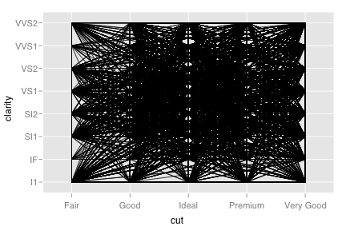
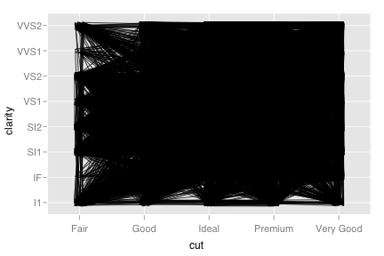

Jitter points to avoid overplotting
See layer and qplot for more information on creating a complete plot from multiple components.
> qplot(cut, clarity, data=diamonds, geom="blank", group=1) + geom_path()  > qplot(cut, clarity, data=diamonds, geom="blank", group=1) + geom_path(position="jitter") 